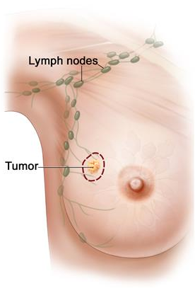

The CAMELYON16 challenge has ended in November 2016 PLEASE CHECK OUT CAMELYON17:
Background
In this challenge, we will focus on the detection of micro- and
macro-metastases in lymph node digitized images. This subject is highly relevant; lymph node metastases occur in most cancer types (e.g. breast, prostate, colon). Lymph nodes are small glands that filter lymph, the fluid that circulates through the lymphatic system. The lymph nodes in the underarm are the first place breast cancer is likely to spread. Metastatic involvement of lymph nodes is one of the most important prognostic variables in breast cancer. Prognosis is poorer when cancer has spread to the lymph nodes. The diagnostic procedure for pathologists is, however, tedious and time-consuming and prone to misinterpretation.
The solution: A challenge to improve the detection of cancer metastasis
Automated detection of lymph node metastasis has a great potential to help the pathologist and reduce their workload. Within the past few years, the field has been moving towards grand goals with strong potential diagnostic impact: (fully) automated analysis of whole-slide images to detect or grade cancer, to predict prognosis or identify metastases. As such, we feel now is the right time to offer a platform for interested groups to compare strategies and algorithms for this highly meaningful task in histopathology. This will be the first challenge using whole-slide images in histopathology. The goal of the CAMELYON Challenge is to apply an open science approach to develop algorithms to detect cancer metastasis in lymph node images. Such an approach could improve the diagnosis of the patients and significantly reduce the workload of the pathologists.